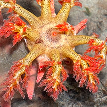
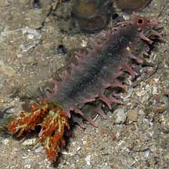
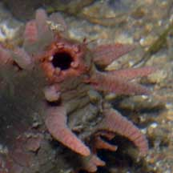
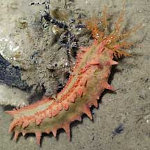
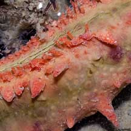
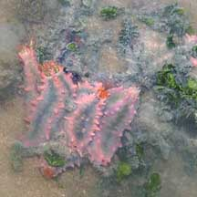
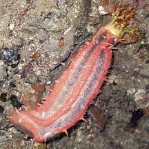
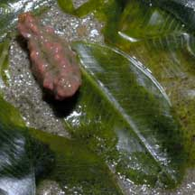

|
|
| sea cucumbers text index | photo index |
| Phylum Echinodermata > Class Holothuroidea |
| Thorny
sea cucumber Colochirus quadrangularis Family Cucumariidae updated Apr 2020 Where seen? This small colourful sea cucumber is commonly seen on our Northern shores. It appears to be seasonally abundant. There are times where many individuals are seen, jammed next to one another. At other times, few are seen, widely separated from one another. Thorny sea cucumbers do not appear to burrow into the ground and are often found on the sand especially in seagrass areas, clinging to tubeworm tubes or other hard surfaces. Features: 6-10cm long, and really tiny ones hardly bigger than a seagrass leaf are sometimes also seen. Body short, squarish or quadrangular in cross-section with a distinct upperside and underside. Underside is flat with three rows of short red tube feet. The upperside has soft, harmless conical projections. Anus is surrounded by five tiny teeth-like structures. Body colours range from bright red or orange, with shades of grey and green or bluish lines along the length. Feeding tentacles yellow with tiny brown speckles and branched tips sometimes red or orange. Sometimes mistaken for the Pink warty sea cucumber which looks similar and is found in the same habitat often next to the Thorny sea cucumber. The Pink warty sea cucumber has pink warty bumps instead of soft thorns and has yellow on its body, which the Thorny sea cucumber usually lacks. |
 Changi, Dec 03  Feeding tentacles. |
 Pulau Sekudu, Aug 03  Teeth-like projections around the anus. |
 Changi, Jun 05  Three rows of tube feet on the underside. |
| What does it eat? It gathers plankton and suspended organic particles from the water with feathery feeding tentacles. Each tentacle is stuffed one by one into the mouth to wipe off any edible bits that are stuck to it. |
 Sometimes seen in large numbers clusterd together. Tuas, Oct 10 |
 Sometimes with blue stripes. Beting Bronok, Jul 05. |
 This one was tinier than a seagrass leaf. Changi, May 06 |
| Living on a cucumber Sometimes small creatures are seen on the sea cucumber. Such as parasitic snails and tiny shrimps. |
 Ulimid snails found on the sea cucumber. East Coast, Jun 09 Photo shared by James Koh on flickr. |
 Commensal shrimp seen on the sea cucumber. |
| Human uses: Thorny sea cucumbers are among the sea cucumbers harvested for the live aquarium trade, although not as popular as the more colourful Sea apple sea cucumber (Pseudocolochirus violaceus). Like other fish and creatures harvested from the wild, most die before they can reach the retailers. Without professional care, most die soon after they are sold. Often of starvation as owners are unable to provide the food that they need to survive. Those that do survive are unlikely to breed. |
| Thorny sea cucumbers on Singapore shores |
On wildsingapore
flickr
|
| Other sightings on Singapore shores |
Links
|